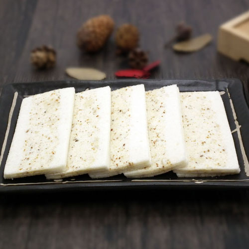
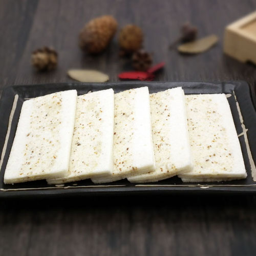
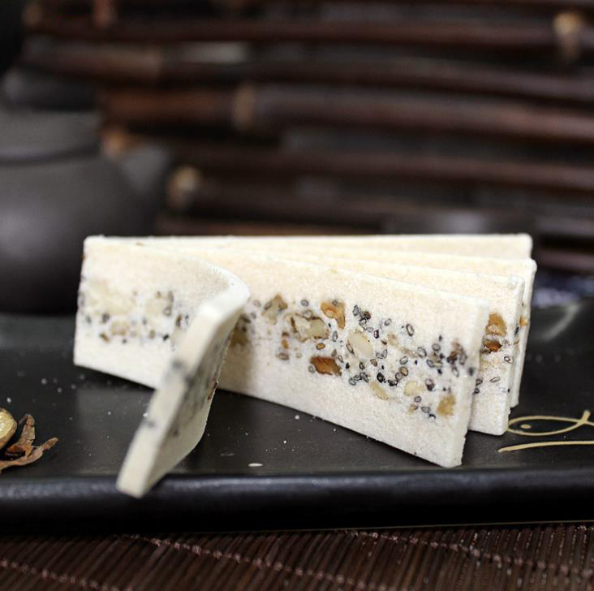
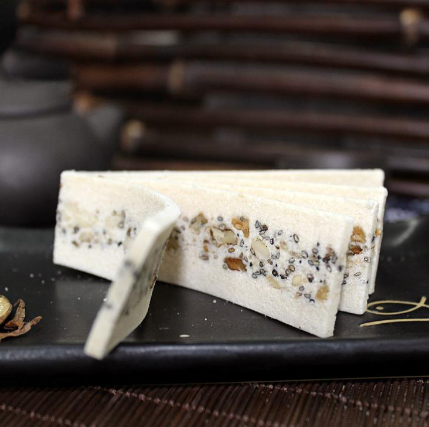

Yun Pian Gao (Cloud Cake), also called Xue Pian Gao (Snow Cake), is a traditional dessert in Jiangsu and Guangdong Province.
Yun Pian Gao is thinly sliced glutinous cakes which are white in color just like the snow or cloud in the sky.
Glutinous rice contains protein, fat, sugar, calcium, phosphorus, iron, vitamin B1, vitamin B2, niacin and starch. It is rich in nutrition. It is a warm and strong food. It has the effects of Tonifying the middle and Qi, strengthening the spleen and stomach, and stopping sweating. It can relieve the poor appetite and diarrhea.
There are many kinds of fatty acids in lard. The content of saturated fatty acids and unsaturated fatty acids is the same. They are almost equal. They have certain nutrition and can provide very high calories. The digestibility and absorption rate of vitamin A in human body is higher than 95%. It is a condiment with high content of vitamin A and vitamin D. the proportion of fat in it is smaller than that in butter. It is more suitable for people and children who lack vitamin A.
Cloud cake is one of the best offerings to pay homage to the moon in the Mid Autumn Festival. A few days before the festival, no one does not buy cloud cake, in addition to their own use, he also gave. Chaozhou overseas Chinese, scattered all over the world, will always be brought by the central people or try to buy a few pieces of cloud cake on the eve of the Mid Autumn Festival to comfort their homesickness.
Cloud flake cake has many raw materials and extremely fine technology. The main raw materials are glutinous rice, white sugar, lard, olive, sesame, spices and so on. Every raw material should be selected from the best. Let's talk about glutinous rice. Glutinous rice needs to be milled to remove the rice skin and leave the rice heart.
When frying, one needs to be fully cooked and the other needs to be kept white; the grinding powder needs to be continuously sieved, and it needs to be as fine as flour; the sugar does not need crystal sugar, but uses the "sugar" of the tulangliao to take the small, loose and instant grains. All kinds of raw materials are processed properly, mixed and mixed, compressed. Finally, the slicer holds a sharp and generous knife and cuts it into pieces, as thin as a page. When you unseal a piece of cloud cake like a book in the 16th grade, you will be amazed by its white color and fragrant smell.
Whenver there was a wedding,
I was a kid when I first tasted them. They are soft and sweet. They represent my
I still remember that they were usually wrapped in a piece of red paper, which symbolizes good luck and great news.
I almost didn't feel anything going through my teeth when I first bit it. It is so thin yet so flavourful. I was satisfied to hear
I always wondered why the name for them is cloud flake cake. Now I'm thinking about it: the cake is as light as the cloud and the color is as pure as the cloud. It's cut in thin pieces like
The sesame seeds embedded in the cake is the best part. They crunch in between my teeth and they left my mouth with a special scent of the seeds. I can't get enough of them.
I think of
when I look at these pictures and trying to come up with food in my hometown. I haven't been back for such a long time and all my memories are blurry. Yet I still remember my grandma's smiley face :) and when she handed my the flake cake.
 


 

{kind=link}